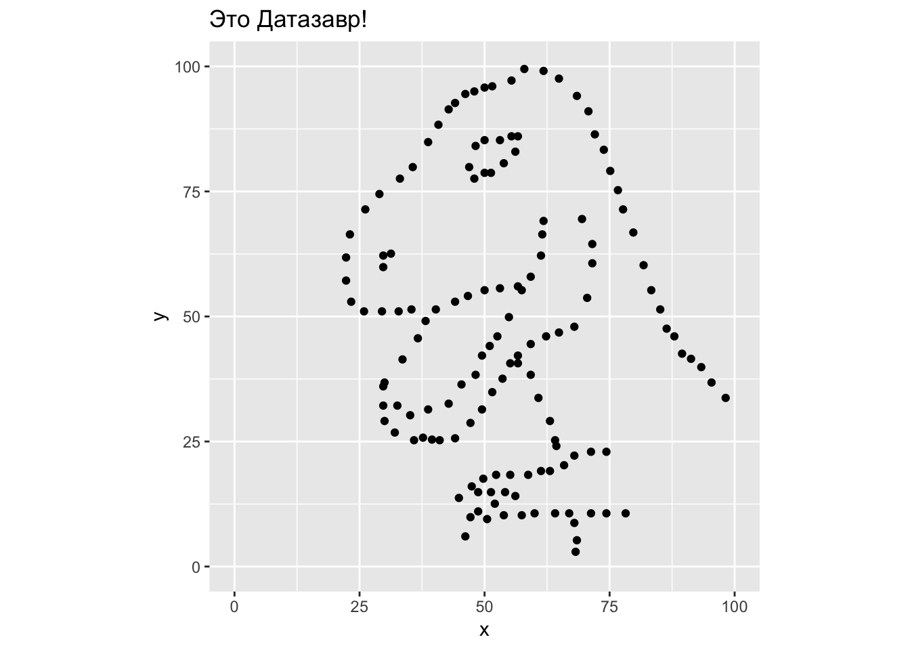

4 День 3. Описательная статистика и визуализация
4.1 Описательная статистика
Статистика делится на описательную статистику (descriptive statistics) и статистику вывода (inferential statistics). Описательная статистика пытается описать нашу выборку (sample, т.е. те данные, что у нас на руках) различными способами. Проблема в том, что описательная статистика может описать только то, что у нас есть, но не позволяет сделать выводы о генеральной совокупности (population) - это уже цель статистики вывода. Цель описательной статистики - “ужать” данные для их обобщенного понимания с помощью статистик. Заметьте, у выборки (sample) мы считаем статистики (statistics), а у генеральной совокупности (Population) есть параметры (Parameters). Вот такая вот мнемотехника. Статистики часто выступают в роли точечной оценки (point estimators) параметров, так что в этом легко запутаться. Например, среднее (в выборке) - это оценка среднего (в популяции). Да, можно свихнуться. Мы это будем разбирать подробнее в следующие занятия (это действительно важно, поверьте), пока что остановимся только на описании выборки.

Сегодня мы будем работать с пакетом survival, в котором есть датасет pbc. Мы его сразу превратим в data.table
library(survival)
library(data.table)
data(pbc)
pbcdt <- as.data.table(pbc)Это данные 424 пациентов с первичным билиарным циррозом - редким аутоимунным заболеванием печени. При поступлении в клинику у них измерили разные медицинские показатели, определели в экспериментальную и контрольную группу. В наборе данных есть информация о том, что стало с этими испытуемыми.
This data is from the Mayo Clinic trial in primary biliary cirrhosis (PBC) of the liver conducted between 1974 and 1984. A total of 424 PBC patients, referred to Mayo Clinic during that ten-year interval, met eligibility criteria for the randomized placebo controlled trial of the drug D-penicillamine. The first 312 cases in the data set participated in the randomized trial and contain largely complete data.
Подробнее про датасет можно почитать здесь или в хэлпе
Эти данные часто используются в качестве примера для анализа выживаемости. Эти данные уже в достаточно упорядоченном виде и не нуждаются в предобработке (что, к сожалению, случай малореалистичный). Зато на этом наборе данных можно
Для простоты мы удалим все пропущенные значения. Мы уже знакомы с функцией is.na(), теперь познакомимся с еще одной функцией: complete.cases() возвращает вектор, равный длине датафрейма, с FALSE для строчек, где есть хотя бы один NA, и TRUE если пропущенных значений нет.
pbcdt <- pbcdt[complete.cases(pbc),]Пока что мы будем использовать только данные о возрасте испытуемых. Для краткости обозначим это вектором a
a <- pbcdt$age4.1.1 Меры центральной тенденции
Мера центральной тенденции - это число для описания центра распределения.
4.1.1.1 Арифметическое среднее
Самая распространенная мера центральных тенденций - арифметическое среднее, то самое, которые мы считаем с помощью функции mean()
\[\overline{x}= \frac{\sum\limits_{i=1}^{n} x_{i}} {n}\]
Не пугайтесь значка \[\sum\limits_{i=1}^{n}\] - это означает сумму от i = 1 до n. Что-то вроде цикла for!
В качестве упражнения попробуйте самостоятельно превратить эту формулу в функцию mymean() c помощью sum() и length(). Можете убирать NA по дефолту! Сравните с результатом функции mean().
mean(a)## [1] 49.799664.1.1.2 Медиана
Медиана - это середина распределения. Представим, что мы расставили значения по порядку (от меньшего к большему) и взяли значение по середине. Если у нас четное количество значений, то берется среднее значение между теми двумя, что по середине. Для расчета медианы есть функция median():
median(a)## [1] 49.70979Разница медианы со средним не очень существенная. Это значит, что распределение довольно “симметричное”. Но бывает и по-другому.
Представьте себе, что кто-то говорит про среднюю зарплату в Москве. Но ведь эта средняя зарплата становится гораздо больше, если учитывать относительно небольшое количество мультимиллионеров и миллиардеров! А вот медианная зарплата будет гораздо меньше.
Представьте себе, что в эту клинику с циррозом печени пришел 8000-летний Король Ночи из Игры Престолов. Тогда арифметическое среднее станет гораздо больше:
mean(c(a, 8000))## [1] 78.50075А вот медиана останется почти той же.
median(c(a, 8000))## [1] 49.76318Таким образом, экстремально большие или маленькие значения оказывают сильное влияние на арифметическое среднее, но не на медиану. Поэтому медиана считается более “робастной” оценкой, т.е. более устойчивой к выбросам и крайним значениям.
4.1.1.3 Усеченное среднее (trimmed mean)
Если про среднее и медиану слышали все, то про усеченное (тримленное) среднее известно гораздо меньше. Тем не менее, на практике это довольно удобная штука, потому что представляет собой некий компромисс между арифметическим средним и медианой.
В усеченном среднем значения ранжируются так же, как и для медианы, но отбрасывается только какой-то процент крайних значений. Усеченное среднее можно посчитать с помощью обычной функции mean(), поставив нужное значение параметра trim =:
mean(a, trim = 0.1)## [1] 49.57392trim = 0.1 означает, что мы отбросили 10% слева и 10% справа. trim может принимать значения от 0 до 0.5. Что будет, если trim = 0?
mean(a, trim = 0)## [1] 49.79966Обычное арифметическое среднее! А если trim = 0.5?
mean(a, trim = 0.5)## [1] 49.70979Медиана!
4.1.1.4 Мода
Мода (mode) - это самое частое значение. Обычно используется для номинальных переменных. Например, можно посчитать моду для регионов, в которых происходили битвы. Что интересно, в R нет встроенной функции для подсчета моды. Обычно она и не нужна: мы можем посчитать таблицу частот и даже проранжировать ее (и мы уже умеем это делать разными способами). На случай если Вы все-таки хотите создать свою функцию для моды, можно попробовать что-то такое:
mymode <- function(x){names(which.max(table(x)))}
mymode(pbcdt$sex)## [1] "f"4.1.2 Меры рассеяния
Статистик пытался перейти в брод реку, средняя глубина которой 1 метр. И утонул.
В чем была его ошибка? Он не учитывал разброс значений глубины!
Мер центральной тенденции недостаточно, чтобы описать выборку. Необходимо знать ее вариабельность.
4.1.2.1 Размах {range}
Самое очевидное - посчитать размах (range), то есть разницу между минимальным и максимальным значением. В R есть функция для вывода максимального и минимального значений:
range(a)## [1] 26.27789 78.43943Осталось посчитать разницу между ними:
diff(range(a))## [1] 52.16153Естественно, крайние значения очень сильно влияют на этот размах, поэтому на практике он не очень-то используется.
4.1.2.2 Дисперсия
Дисперсия (variance) вычисляется по следующей формуле:
\[s^2= \frac{\sum\limits_{i=1}^{n} (x_{i} - \overline{x})^2} {n}\]
Попробуйте превратить это в функцию myvar()!
myvar <- function(x) mean((x - mean(x))^2)Естественно, в R уже есть готовая функция var(). Но, заметьте, ее результат немного отличается от нашего:
myvar(a)## [1] 110.334var(a)## [1] 110.7353Дело в том, что встроенная функция var() делит не на \(n\), а на \(n-1\). Это связано с тем, что эта функция пытается оценить дисперсию в генеральной совокупности, т.е. относится уже к статистике вывода. Про это мы будем говорить в дальнейших занятиях, сейчас нам нужно только отметить то, что здесь есть небольшое различие.
4.1.2.3 Стандартное отклонение
Если вы заметили, значение дисперсии очень большое. Чтобы вернуться к единицам измерения, соответствующих нашим данным используется корень из дисперсии, то есть стандартное отклонение (standard deviation):
\[s= \sqrt\frac{\sum\limits_{i=1}^{n} (x_{i} - \overline{x})^2} {n}\]
Для этого есть функция sd():
sd(a)## [1] 10.52308Что то же самое, что и:
sqrt(var(a))## [1] 10.523084.1.2.4 Медианное абсолютное отклонение
Поскольку стандартное отклонение не устойчово ко всяким выбросам, то иногда используют его альтернативу, которая устойчива к выбросам (особенно если эти выбросы нам как раз и нужно удалить) - медианное абсолютное отклонение (median absolute deviation):
\[mad= median(|x_{i} - median(x)|)\]
Для этого есть функция mad():
mad(a)## [1] 10.632914.1.2.5 Межквартильный размах
Другой вариант рабостной оценки вариабельности данных является межквартильный размах (interquartile range = IQR). Это разница между третьим и первым квартилем - значением, которое больше 75% значений в выборке, и значением, которое больше 25% значений в выборке.
IQR(a)## [1] 15.07187Ну а второй квартиль - это медиана!
4.1.3 Ассиметрия и эксцесс
4.1.3.1 Ассиметрия
Ассиметрия (skewness) измеряет симметричность распределения. Положительный показатель ассиметрии (“Right-skewed” или positive skewness) означает, что хвосты с правой части распределения длиннее. Негативный показатель ассиметрии (“Left-skewed” или negative skewness) означает, что левый хвост длиннее.

Например, в психологии положительная ассиметрия встречается очень часто. Например, время реакции: оно ограничено снизу 0 мс (а по факту не меньше 100 мс - быстрее сигнал не успеет по нервной системе пройти до пальцев), а вот с другой стороны оно никак не ограничено. Испытуемый может на полчаса перед монитором затупить, ага.
4.1.3.2 Эксцесс
Эксцесс (kurtosis) - это мера “вытянутости” распределения:

Положительные показатели эксцесса означают “вытянутое” распределение, а отрицательные - “плоское”.
4.1.3.3 Ассиметрия и эксцесс в R
К сожалению, в базовом R нет функций для ассиметрии и эксцесса. Зато есть замечательный пакет psych (да-да, специально для психологов).
install.packages("psych")library("psych")В нем есть функции skew() и kurtosi():
skew(a)## [1] 0.1786867kurtosi(a)## [1] -0.5174814Ассиметрия близка к нулю - значит распределение выборки достаточно симметричное, а эксцесс немного ниже нуля - значит распределение довольно “плоское”.
4.1.4 А теперь все вместе!
В базовом R есть функция summary(), которая позволяет получить сразу неплохой набор описательных статистик.
summary(a)## Min. 1st Qu. Median Mean 3rd Qu. Max.
## 26.28 41.51 49.71 49.80 56.58 78.44Функция summary() - это универсальная (generic) функция. Это означает, что Вы можете ее применять для разных объектов и получать разные результаты. Попробуйте применить ее к векторам с разными типами данных и даже к дата.фреймам и дата.тейблам. Посмотрите, что получится.
В пакете psych есть еще и замечательная функция describe(), которая даст Вам еще больше статистик, включая ассиметрию и куртозис:
describe(a)## vars n mean sd median trimmed mad min max range skew
## X1 1 276 49.8 10.52 49.71 49.57 10.63 26.28 78.44 52.16 0.18
## kurtosis se
## X1 -0.52 0.63Даже усеченное (trimmed) среднее есть (с trim = 0.1)! Все кроме se мы уже знаем. А про этот se узнаем через позже.
Эта функция прекрасно работает в data.table в сочетании с by=:
pbcdt[, describe(age), by = stage]## stage vars n mean sd median trimmed mad min
## 1: 4 1 94 53.09709 10.71781 53.92334 53.20437 10.890666 29.55510
## 2: 3 1 111 47.94154 10.00419 47.42779 47.41838 9.948946 26.27789
## 3: 2 1 59 48.52757 10.22616 48.75838 48.34855 10.975908 30.27515
## 4: 1 1 12 47.41182 10.11477 47.97673 47.75359 12.132762 28.88433
## max range skew kurtosis se
## 1: 78.43943 48.88433 -0.07684694 -0.4361883 1.105458
## 2: 71.89322 45.61533 0.35465904 -0.3655477 0.949556
## 3: 75.01164 44.73648 0.19440406 -0.7000602 1.331333
## 4: 62.52156 33.63723 -0.06406915 -1.1025021 2.9198834.1.5 Описательных статистик недостаточно
Я в тайне от Вас загрузил данные в переменную xxx (можете найти этот набор данных здесь, если интересно). Выглядят они примерно так:
head(xxx)## x y
## 1: 55.3846 97.1795
## 2: 51.5385 96.0256
## 3: 46.1538 94.4872
## 4: 42.8205 91.4103
## 5: 40.7692 88.3333
## 6: 38.7179 84.8718str(xxx)## Classes 'data.table' and 'data.frame': 142 obs. of 2 variables:
## $ x: num 55.4 51.5 46.2 42.8 40.8 ...
## $ y: num 97.2 96 94.5 91.4 88.3 ...
## - attr(*, ".internal.selfref")=<externalptr>Надеюсь, Вы уже понимаете, как это интерпретировать - два столбца с 142 числами каждый. Представьте себе, как выглядят эти точки на плоскости, если каждая строчка означают координаты одной точки по осям x и y (это называется диаграмма рассеяния, точечная диаграмма или scatterplot).
Применим разные функции, которые мы выучили:
mean(xxx$x)## [1] 54.26327mean(xxx$y)## [1] 47.83225median(xxx$x)## [1] 53.3333median(xxx$y)## [1] 46.0256Средние и медианы примерно одинаковые, при этом по х они около 53-54, а по у - примерно 46-47. Попытайтесь представить это. Идем дальше:
sd(xxx$x)## [1] 16.76514sd(xxx$y)## [1] 26.9354Похоже, расброс по у несколько больше, верно?
skew(xxx$x)## [1] 0.2807568skew(xxx$y)## [1] 0.2472603kurtosi(xxx$x)## [1] -0.2854912kurtosi(xxx$y)## [1] -1.063552Похоже, оба распределения немного право-ассиметричны и довольно “плоские”.
Давайте еще посчитаем корреляцию. Мы про нее будем говорить позже гораздо подробнее. Пока что нам нужно знать, что она говорит о линейной связи двух переменных. Если корреляция положительная (максимум равен 1), то чем больше х, тем больше у. Если отрицательная (минимум равен -1), то чем больше х, тем меньше у. Если же корреляция равна нулю, то такая линейная зависимость отсутствует.
cor(xxx$x, xxx$y)## [1] -0.06447185Корреляция очень близка к нулю (делайте выводы и представляйте).
Давайте напоследок воспользуемся функцией describe() из psych:
describe(xxx)## vars n mean sd median trimmed mad min max range skew
## x 1 142 54.26 16.77 53.33 53.69 15.97 22.31 98.21 75.90 0.28
## y 2 142 47.83 26.94 46.03 46.90 30.79 2.95 99.49 96.54 0.25
## kurtosis se
## x -0.29 1.41
## y -1.06 2.26Готовы узнать, как выглядят эти данные на самом деле?!
Жмите сюда если готовы!

Из этого можно сделать важный вывод: не стоит слепо доверять описательным статистикам. Нужно визуализировать данные, иначе можно попасть в такую ситуацию в реальности. Все следующее занятие будет посвящено визуализации данных.
4.2 Визуализация данных в R
4.2.1 Базовые функции для графики
В R есть достаточно мощный встроенный инструмент для визуализации. Я приведу три примера простых примера. Во-первых, это та самая диаграмма рассеяния. Здесь все просто: функция plot(), вектора x и у, дополнительные параметры для цвета, размера, формы точек.
Для примера возьмем из дататейбла pbcdt уровень холистерина и возраст:
plot(pbcdt$age, pbcdt$chol)Между прочим, функция
plot()- это тоже универсальная (generic) функция, как иsummary(). В качестве аргумента можете ей скормить просто один вектор, матрицу, датафрейм. Более того, многие пакеты добавляют новые методы plot() для новых объектов из этих пакетов.
Другая распространенная функция - hist() - гистограмма:
hist(pbcdt$age)Ну и закончим на суперзвезде прошлого века под названием “ящик с усами”(boxplot with whiskers):
boxplot(chol ~ stage, pbcdt)Здесь мы использовали уже знакомый нам класс формул. Они еще будут нам встречаться дальше, обычно они используются следующим образом: слева от ~ находится зависимая переменная, а справа - “предикторы”. Эта интуиция работает и здесь: мы хотим посмотреть, как различается холестирин в зависимости от стадии